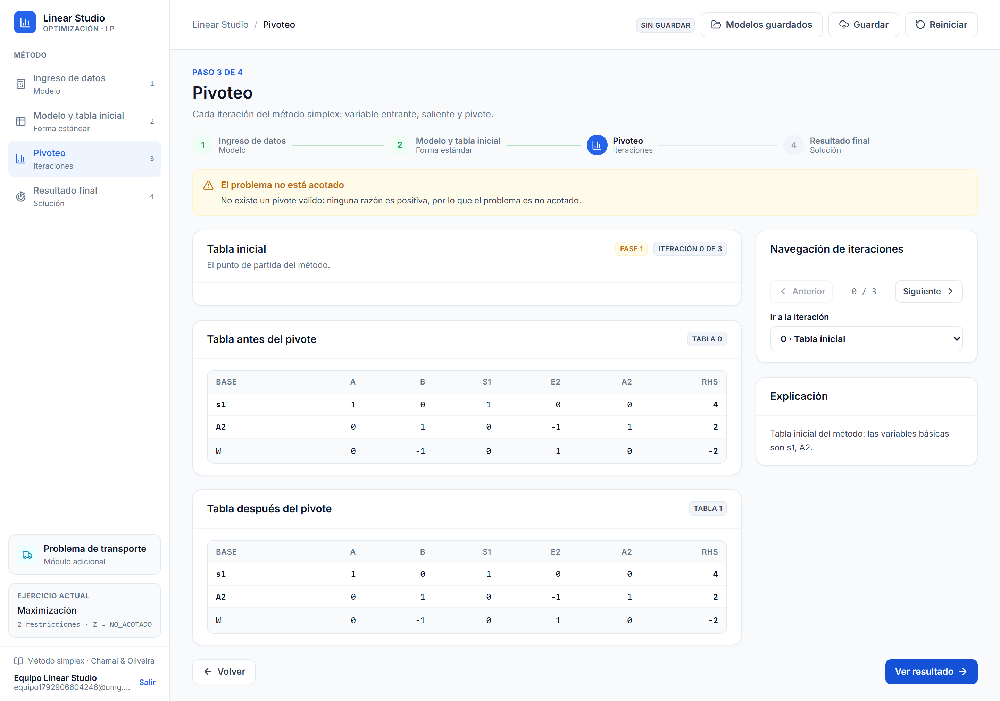
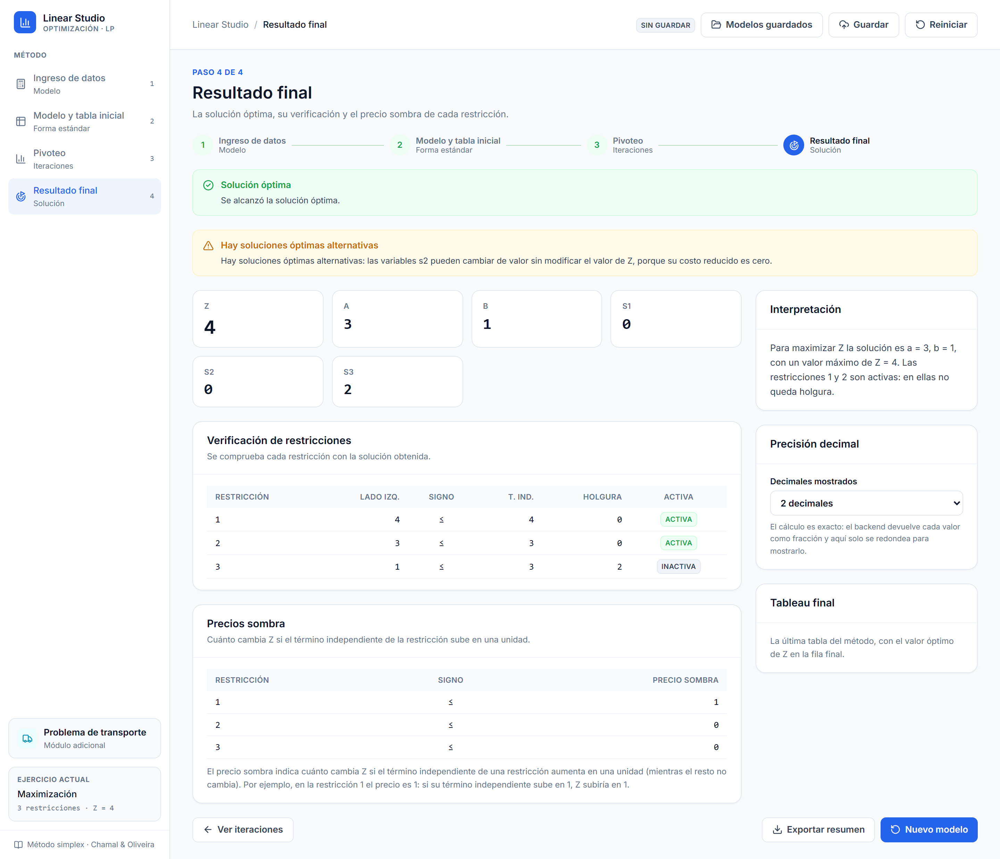
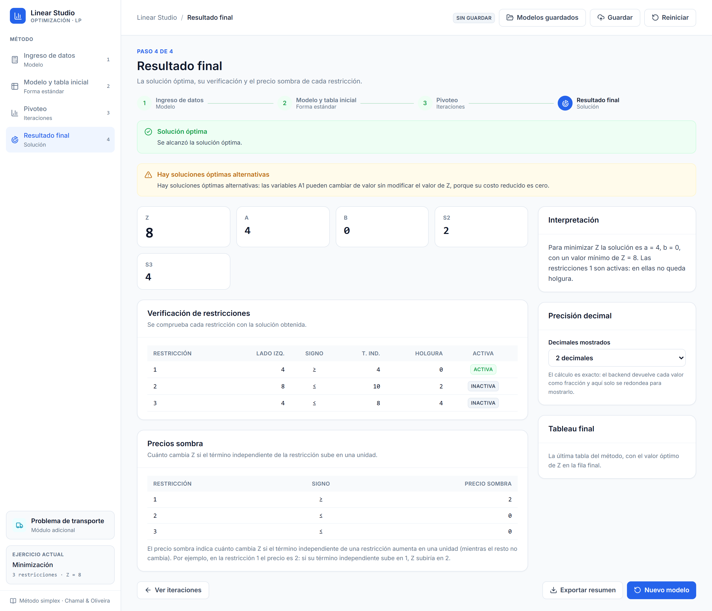
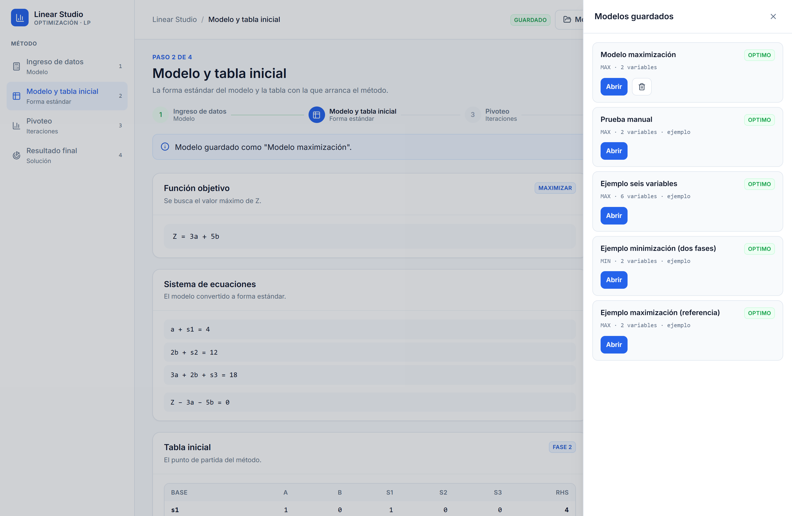

Guía de uso del sistema, guía de la presentación y ficha individual de cada
integrante: qué le toca, qué debe saber y cómo responderlo.
Jhosef Reyes Román
Oscar Gonzalez Rojas
Alejandro Leiva Garcia
Jonnathan Tiul Ramirez
Richard Apolonio Ramirez
Curso: Investigación de Operaciones — Universidad Mariano Gálvez de
Guatemala
Entrega: 25 de octubre de 2026
Repositorio: github.com/JhosefEstefano/mr-simplex
Contenido
Índice
El sistema en un minuto
Qué le toca a cada uno
Guía de la presentación
Ficha · Jhosef Reyes Román
Ficha · Oscar Gonzalez Rojas
Ficha · Alejandro Leiva Garcia
Ficha · Jonnathan Tiul Ramirez
Ficha · Richard Apolonio Ramirez
Anexo técnico
Equivalencias con Python
Uso de herramientas de IA
Preguntas frecuentes
⚠
Lee esto antes de presentar.
El sistema está construido con Node.js + Express + MongoDB, no con
Python/Flask/SQLite. Si alguien pregunta por Flask, la respuesta correcta es la de la
sección 10: la lógica matemática es la misma, el lenguaje es JavaScript.
Sección 1
El sistema en un minuto
Linear Studio resuelve problemas de programación lineal con el método
simplex y muestra todo el procedimiento: la forma estándar del modelo,
cada iteración con su tabla antes y después, la variable que entra, la que sale, el
elemento pivote, la prueba de razones y las operaciones de fila.
El recorrido en cuatro pasos
Paso
Qué hace
Qué se ve
1 · Ingreso de datos
Escribes el modelo: variables, objetivo y restricciones.
Formulario con vista previa en vivo.
2 · Modelo y tabla inicial
El servidor lo convierte a forma estándar.
Ecuaciones, variables agregadas y la tabla inicial.
3 · Pivoteo
El simplex itera pivoteando.
Cada iteración con su explicación y sus tablas.
4 · Resultado final
Se lee y se interpreta la solución.
Métricas, verificación, interpretación y precios sombra.
Lo que el sistema sabe hacer
Maximizar y minimizar (el mínimo se resuelve maximizando −Z).
Método de dos fases para restricciones ≥ y
=.
Cálculo exacto: todas las operaciones son fracciones, sin error de
punto flotante.
Casos especiales: no acotado, infactible, degeneración y soluciones
óptimas múltiples.
Análisis: verificación de restricciones y precios sombra.
Persistencia: cuentas, modelos guardados e historial.
Módulo de transporte como extensión.
Ejemplo de referencia
Maximizar Z = 3a + 5b
sujeto a a ≤ 4
2b ≤ 12
3a + 2b ≤ 18
a, b ≥ 0
Solución: a = 2, b = 6, Z = 36
Sección 2
Qué le toca a cada uno
Integrante
Su parte
Archivos que domina
Jhosef Reyes Román
Captura y validación de datos; motor de cálculo y capa de la API.
Todos defendemos el mismo sistema, pero cada uno explica su parte.
La nota es individual: lo que se evalúa es que cada integrante pueda abrir su código y
explicarlo sin leer. Las fichas de las secciones 4 a 8 dicen exactamente qué mirar.
Sección 3
Guía de la presentación
El guion completo dura unos 6 minutos. Cada bloque indica quién lo dice y
qué pantalla hay abierta. Las palabras entre comillas son sugeridas: con que se diga la
idea, vale.
“Nuestro sistema resuelve problemas de programación lineal con el método simplex y muestra
cada tabla paso a paso. Usamos Node.js con Express y MongoDB. Este
maquetado usa un ejemplo: maximizar Z = 3a + 5b con tres restricciones.”
Bloque 1 · Pantalla 1, el ingreso del modelo (Jhosef)
“Aquí el usuario elige Max o Min, de 2 a 6 variables, y escribe los coeficientes y las
restricciones. Si falta un dato, el sistema muestra un error claro.”
Qué tener listo: el formulario con el ejemplo a medio llenar y, si hay
tiempo, la alerta de «La restricción 1 está incompleta».
Bloque 2 · Pantalla 2, la tabla inicial (Oscar)
“Pasamos el modelo a forma estándar sumando una variable de holgura por cada restricción
≤. Con eso armamos la tabla inicial.”
Bloque 3 · Pantalla 3, las iteraciones (Oscar y Alejandro)
Oscar: “Entra la variable con el coeficiente más negativo en Z y sale la
fila con la razón mínima. Aquí entra b y sale s2.”
Alejandro: “Luego hacemos las operaciones de fila y mostramos la tabla
nueva con su explicación. Repetimos hasta que no haya negativos en Z.”
Bloque 4 · Pantalla 4, el resultado (Jonnathan)
“Al terminar mostramos Z = 36, a = 2 y b = 6, con su interpretación. Guardamos cada problema
y su solución en la base de datos para consultarlos después.”
Bloque 5 · Cierre (Richard)
“La interfaz muestra cada tabla con el pivote resaltado y hay un manual de usuario. Todo
esto lo entregamos funcionando el 25 de octubre.”
✓
Si sobra tiempo, muestra el módulo de transporte. Es la extensión que
más impresiona: una matriz de costos que se compila a un modelo de programación lineal y
se resuelve con el mismo simplex (costo 102 en el ejemplo de 2×2).
Sección 4 · Ficha individual
Jhosef Estefano Reyes Román
Jhosef Estefano Reyes Román
Captura y validación de datos · motor de cálculo y capa de la API
Su parte, en una frase
Construí la puerta de entrada del sistema: el formulario donde se declara el modelo,
la validación que lo acepta o lo rechaza con un mensaje claro, y el motor de cálculo
exacto sobre el que se apoya todo lo demás.
Qué debe saber
Por qué aritmética de fracciones y no punto flotante. Con
decimales, 0.1 + 0.2 = 0.30000000000000004; con fracciones el resultado es exacto.
El sistema usa fraction.js (BigInt) en todas las operaciones.
Las nueve reglas de validación y su mensaje: número de variables
entre 2 y 6, objetivo MAX/MIN, un coeficiente por variable en Z y en cada
restricción, valores numéricos finitos, signo ∈ {≤, ≥, =}, término independiente
presente y al menos una restricción.
La diferencia entre un error y un resultado. Un modelo mal formado
devuelve 400 con la lista de errores por campo; un modelo bien
formado pero sin solución óptima devuelve 200 con
estado: INFACTIBLE o NO_ACOTADO. Son cosas distintas.
El recorrido de un modelo: formulario → modeloParaApi()
→ POST /api/resolver → respuesta con
modelo, formaEstandar, tablaInicial,
iteraciones, tableauFinal y resultado → los
cuatro pasos de la interfaz.
Por qué cada valor viaja como fracción y decimal: el decimal permite
mostrarlo redondeado; la fracción es la verdad. El frontend nunca recalcula: solo
reformatea.
“Aquí el usuario elige Max o Min, de 2 a 6 variables, y escribe los coeficientes y las
restricciones. Si falta un dato, el sistema muestra un error claro.”
Preguntas que le pueden hacer
¿Por qué no usaron números decimales?
Porque el punto flotante acumula error y en una tabla simplex un 0.0000001 puede
cambiar qué solución se considera óptima. Con fracciones el cálculo es exacto y el
decimal es solo para mostrar.
¿Qué pasa si el usuario escribe un número con letra?
La validación lo rechaza con «no es un número válido» y le señala el campo exacto.
Si escribe un número como texto («3»), el backend lo acepta y lo convierte.
¿Cómo sé que la validación del navegador y la del servidor coinciden?
Los mensajes están escritos una vez en el servidor y replicados en el cliente; las
pruebas del frontend comprueban que el cliente bloquea el envío y las del servidor que
devuelve el mismo texto.
¿Qué es un 500 y cuándo sale?
Es un error interno del servidor. Sale, por ejemplo, si el simplex superara el tope de
iteraciones. Devuelve un mensaje genérico en español y nunca filtra detalles técnicos.
Errores que no debe cometer
No decir «Flask» ni «SQLite»: el backend es Express y MongoDB.
No decir que los resultados están precargados: se calculan en el servidor cada vez.
No prometer «cualquier número de variables»: el curso pide de 2 a 6.
Su pantalla: el formulario dinámico con la vista previa en vivo, que se actualiza con
cada tecla.
Sección 5 · Ficha individual
Oscar René Gonzalez Rojas
Oscar René Gonzalez Rojas
Forma estándar, tableau inicial y selección del pivote
Su parte, en una frase
Escribí la traducción del modelo al tableau: la forma estándar con sus variables
agregadas, la tabla inicial y las dos decisiones que abren cada iteración, qué variable
entra y cuál sale.
Qué debe saber
La tabla de conversión a forma estándar.
Restricción
Qué se agrega
Restricción original
≤
+ sᵢ
a₁x₁ + … ≤ bᵢ
≥
− eᵢ y + Aᵢ
a₁x₁ + … ≥ bᵢ
=
+ Aᵢ
a₁x₁ + … = bᵢ
La holgura sᵢ es el sobrante; el exceso
eᵢ representa lo que sobra por encima del mínimo; la
artificial Aᵢ es un truco de la Fase 1 y no existe en el
problema original.
La fila Z. Se escribe como Z − c₁x₁ − c₂x₂ − … =
0. Cada entrada es el costo reducido de esa variable: cuánto mejora el
objetivo si esa variable entra en la base. Por eso el objetivo MAX es
Z = 3a + 5b y la fila Z es
Z − 3a − 5b = 0.
El criterio de optimalidad: la solución es óptima cuando
todos los coeficientes de la fila Z son ≥ 0. Si alguno es negativo, esa
variable puede mejorar el objetivo y hay que pivotear.
La variable entrante: la de coeficiente más negativo en la fila Z
(criterio de Dantzig). Los empates se resuelven por la columna más a la izquierda.
La prueba de razones: en la columna entrante, el cociente
término independiente entre coeficiente, solo si el coeficiente es
positivo. Si es ≤ 0 esa fila no limita y se marca «Sin razón: coeficiente ≤
0». Sale la fila con la menor razón; los empates, la fila más
arriba.
Pantalla 2: “Pasamos el modelo a forma estándar sumando una variable
de holgura por cada restricción ≤. Con eso armamos la tabla inicial.”
Pantalla 3: “Entra la variable con el coeficiente más negativo en Z y
sale la fila con la razón mínima. Aquí entra b y sale s2.”
Preguntas que le pueden hacer
¿Por qué una restricción ≥ necesita dos variables?
Para no perder la igualdad: con solo la holgura se cambiaría ≥ por ≤. Se agrega el
exceso (que toma el valor negativo de lo que sobra) y una artificial, que es la que
permite arrancar el algoritmo.
¿Qué es exactamente el costo reducido?
Es Zj − cj: el cambio en el valor de
Z si esa variable entra en la base. Si es negativo, entrar mejora el objetivo.
¿Por qué la fila Z tiene los coeficientes en negativo?
Porque la fila se escribe como Z − Σcjxj =
0. Con el objetivo Z = 3a + 5b la fila queda
−3, −5.
¿Qué pasa si dos filas dan la misma razón mínima?
Sale la fila más arriba. Es un criterio documentado y además, a partir de la iteración
50, se aplica la regla de Bland para garantizar que el método termina.
¿Cómo se detecta que el problema no está acotado?
Si la columna entrante no tiene ningún coeficiente positivo, no hay ninguna razón que
limite cuánto puede crecer esa variable: el objetivo se va al infinito.
Errores que no debe cometer
No decir que la artificial «es una holgura más»: es un artificio de cálculo que se
elimina en la Fase 1.
No mezclar la convención de la fila Z: si dices «Z − 3a − 5b», mantén ese signo.
No afirmar que el tableau inicial ya es óptimo: casi nunca lo es.
Su pantalla: la iteración 1 con las tarjetas de variable entrante, saliente y pivote, y
la prueba de razones.
Sección 6 · Ficha individual
Alejandro Leiva Garcia
Alejandro Leiva Garcia
Iteraciones, explicaciones y casos especiales
Su parte, en una frase
Escribí el corazón del método: el pivoteo (las operaciones de fila que transforming la
tabla), el registro de cada iteración con su explicación en palabras, y la detección de
los cuatro casos que se salen del camino normal.
Qué debe saber
Las tres operaciones de una iteración:
Normalizar la fila pivote: F2 ← F2 / 2.
Eliminar la columna pivote en las demás filas:
F3 ← F3 − 2·F2.
Eliminarla en la fila Z: FZ ← FZ + 5·F2.
Tras el pivoteo, la columna del pivote queda con 1 en la fila pivote y 0 en el resto:
esa es la nueva base.
Qué se guarda de cada iteración y por qué: número, fase, tabla
antes y después, variable entrante con su motivo, la prueba de razones completa, la
saliente, el elemento pivote, las operaciones de fila y una explicación en lenguaje
natural. Con eso la interfaz puede reconstruir el procedimiento entero.
Los casos especiales:
Caso
Cómo se detecta
No acotado
La columna entrante no tiene ningún coeficiente positivo.
Infactible
La Fase 1 termina con W > 0 (hay artificiales con valor positivo).
Degeneración
La razón mínima sale 0: se pivota pero la solución no cambia.
Soluciones múltiples
Una variable no básica con costo reducido 0 y razón mínima mayor que 0:
existe otra solución óptima distinta.
El ciclo de dos fases: en la Fase 1 el objetivo es
W = Σ Aᵢ (minimizar la suma de las artificiales). Si al
terminar W = 0, el problema es factible y se pasa a la Fase 2 con el objetivo
original. Si W > 0, las restricciones son contradictorias.
La protección contra ciclos: la regla de Bland (elegir siempre la
primera columna con costo reducido negativo) garantiza la terminación; se activa a
partir de la iteración 50 y hay además un tope de 100 iteraciones.
“Luego hacemos las operaciones de fila y mostramos la tabla nueva con su explicación.
Repetimos hasta que no haya negativos en Z.”
Preguntas que le pueden hacer
¿Qué es la degeneración?
Que en la iteración actual hay una variable básica con valor cero. La razón mínima
sale 0: se puede pivotear, pero se llega al mismo punto. No es un error, pero sí es
la señal de que puede haber problemas después, y por eso se documenta el criterio de
desempate.
¿Cómo se detecta el problema infactible?
En la Fase 1, el objetivo es minimizar W = Σ Aᵢ. Si al
terminar W es mayor que cero, alguna artificial sigue valiendo positivo, y eso
significa que no hay forma de satisfacer todas las restricciones a la vez.
¿Cuándo hay soluciones óptimas múltiples?
Cuando en la tabla final hay una variable no básica con costo reducido 0 y la
prueba de razones da un límite positivo: al pivotear se obtiene otra solución con el
mismo Z. En el sistema se avisa con una alerta amarilla.
¿Qué pasa si el algoritmo no converge?
A partir de la iteración 50 se aplica la regla de Bland, que garantiza la
terminación. Además hay un tope duro de 100 iteraciones: si se superara, el servidor
devolvería un error 500 con un mensaje claro, nunca un resultado inventado.
Errores que no debe cometer
No decir «cuando no haya negativos en Z» sin aclarar que es en la fila Z.
No confundir degeneración con soluciones múltiples: una es una variable básica en
cero; la otra son varias soluciones óptimas distintas.
No prometer que todos los casos se detectan en la primera iteración.

Su caso especial: cuando la columna entrante no tiene ninguna razón válida, el
sistema lo explica en lugar de devolver un número falso.

Otro de sus casos: cuando el óptimo no es único, el sistema lo avisa y explica qué
variables pueden moverse sin cambiar Z.
Sección 7 · Ficha individual
Jonnathan Giovanni Tiul Ramirez
Jonnathan Giovanni Tiul Ramirez
Max/Min, interpretación de la solución y la base de datos (con la autenticación)
Su parte, en una frase
Hice que el sistema sepa minimizar y que su resultado se pueda leer y guardar: la
conversión de minimizar a maximizar, la interpretación de la solución con su análisis
económico, y toda la capa de datos con cuentas, historial y autenticación.
Qué debe saber
Por qué minimizar se resuelve maximizando. Todo el criterio de
optimalidad y el pivoteo están pensados para maximizar. Para minimizar
Z se resuelve el problema auxiliar
MAX (−Z), que en la tabla se rotula
Z′; al final se revierte el signo para presentar el valor
real de Z. Así hay un solo algoritmo y no dos.
El precio sombra. Es la derivada del valor óptimo respecto al
término independiente: ∂Z/∂bᵢ. En el ejemplo, el precio
sombra de la restricción 2 es 1.5: si su término independiente pasa de 12 a 13, el
óptimo pasa de 36 a 37.5. Si es 0, esa restricción no está limitando nada.
El modelo de datos. Una sola colección, modelos, con
el modelo y su resolución embebida en el mismo documento. Así al reabrir un
modelo guardado se recupera todo el procedimiento sin recalcular nada. La segunda
colección, usuarios, guarda las cuentas.
El aislamiento entre cuentas. Cada modelo guarda su
usuarioId; la lista devuelve los del usuario más los ejemplos públicos
(los del seed), y solo el dueño puede modificar o borrar los suyos.
La autenticación. La contraseña nunca se guarda: se cifra con
bcrypt, que genera una sal aleatoria por usuario. El token de
sesión es un JWT firmado que solo lleva el identificador y el
correo, y viaja en la cabecera Authorization: Bearer.
El script de carga inicial (npm run seed)
limpia la colección y vuelve a insertar tres modelos de ejemplo: uno de
maximización, uno de minimización (que fuerza las dos fases) y uno de seis
variables. Se puede correr las veces que haga falta.
“Al terminar mostramos Z = 36, a = 2 y b = 6, con su interpretación. Guardamos cada
problema y su solución en la base de datos para consultarlos después.”
Preguntas que le pueden hacer
¿Por qué no hicieron un método aparte para minimizar?
Porque duplicaría el código y multiplicaría los errores. Con la conversión a
MAX (−Z) hay un solo criterio de optimalidad, un solo
pivoteo y un solo conjunto de casos especiales. El cambio de signo está aislado en
dos puntos: al construir la fila Z y al presentar el resultado.
¿Qué es un precio sombra y para qué sirve?
Es cuánto cambia el valor óptimo de Z si el término independiente de esa
restricción aumenta en una unidad. Sirve para decidir si vale la pena ampliar un
recurso: si el precio es 0, la restricción no está limitando y no aporta nada
cheaply.
¿Por qué guardar la resolución dentro del mismo documento?
Para que al reabrir un modelo guardado se vea el procedimiento entero sin volver a
calcularlo, y para que el historial se lea con una sola consulta. El modelo es
jerárquico por naturaleza: restricciones, iteraciones y tablas encajan bien en un
documento.
¿Cómo se protege la contraseña?
Con bcrypt, que es un hash con sal: la contraseña nunca se guarda y tampoco se puede
recuperar, solo comparar. Además el token de sesión lleva solo el identificador y el
correo, nunca la contraseña.
¿Qué pasa si un usuario intenta ver el modelo de otro?
El servidor responde 403 y no devuelve el documento. El filtrado se hace en la
consulta, no en el frontend.
Errores que no debe cometer
No decir «SQLite»: la base de datos es MongoDB.
No prometer recuperación de contraseña por correo: no hay servidor de correo, el token
se muestra en pantalla.
No decir que la contraseña se guarda «cifrada»: se guarda cifrada con
hash (bcrypt), que es una diferencia importante.

Su análisis: además del valor óptimo, el sistema explica cuánto vale cada
restricción y por qué.

Su base de datos: cada modelo se guarda con su resolución completa y se puede reabrir
sin recalcular.
Sección 8 · Ficha individual
Richard Emanuel Apolonio Ramirez Mazariegos
Richard Emanuel Apolonio Ramirez Mazariegos
Interfaz, plan de pruebas y manual de usuario
Su parte, en una frase
Construí la interfaz: los cuatro pasos, las tablas del simplex con el pivote
resaltado y la navegación entre iteraciones. Y el plan de pruebas y el manual que
explican cómo se usa y cómo se verificó el sistema.
Qué debe saber
El sistema de diseño. Los tokens viven una sola vez en
styles/tokens.css y Tailwind los expone como utilidades. La paleta
está fijada: fondo #F8FAFC, superficies blancas, azul
#2563EB para las acciones, bordes
#E2E8F0. Verde, ámbar y rojo son semánticos, no
decorativos, y el color nunca va solo: siempre con texto o icono.
El resaltado del pivote. La fila y la columna del pivote se pintan
en azul muy suave y la celda del pivote lleva además un borde. La fila de la variable
saliente se marca en ámbar. Sirve para ver de un vistazo qué está pivoteando.
Cómo se dibuja una tabla del simplex. Una columna por variable
(más la del término independiente), una fila por restricción con su variable básica
a la izquierda y la fila Z al final. Los números van en monoespaciada y alineados a
la derecha.
La precisión decimal no recalcula. El backend manda cada valor
como fracción exacta y como decimal; el selector de precisión vuelve a calcular el
decimal desde la fracción, con la misma regla de redondeo que el servidor. Cambiar
los decimales no toca el modelo.
El plan de pruebas. Tres capas:
279 pruebas del backend (unitarias y de integración contra un
MongoDB real), 41 del frontend (componentes con Testing Library) y
27 comprobaciones en un navegador real, que además dejan las
capturas del manual. La validación matemática del solver se hizo además contra un
barrido de vértices del poliedro con 1200 modelos aleatorios.
“La interfaz muestra cada tabla con el pivote resaltado y hay un manual de usuario. Todo
esto lo entregamos funcionando el 25 de octubre.”
Preguntas que le pueden hacer
¿Cómo se hace el resaltado del pivote?
Con clases condicionales por fila, columna y celda en el componente de la tabla. La
columna y la fila del pivote reciben el azul suave y la celda, además, un borde: se
distingue el pivote exacto sin gritar.
¿Cómo cambia la precisión decimal?
El backend devuelve cada valor como fracción exacta y como decimal. Al cambiar el
selector se vuelve a calcular el decimal desde la fracción, con la misma regla de
redondeo que usa el servidor (punto medio hacia afuera del cero). No se recalcula el
modelo.
¿Qué pruebas tiene el sistema?
279 del backend y 41 del frontend, más 27 comprobaciones sobre un navegador real que
recorren las cuatro pantallas y el módulo de transporte. Además, el solver se validó
de forma independiente contra un barrido de vértices del poliedro con 1200 modelos
aleatorios, y los precios sombra se compararon a mano con el dual del problema.
¿Cómo se regeneran las capturas del manual?
Con npm run capturas: un script que abre la aplicación en
un navegador real, comprueba que cada pantalla muestre lo que debe y deja las
capturas. El PDF se regenera con npm run manual.
¿Qué se ve en la tabla?
En cada columna, la variable; en cada fila, su valor. La fila Z al final muestra el
costo reducido de cada columna y el valor actual del objetivo. El término
independiente va en la última columna.
Errores que no debe cometer
No decir que los resultados son «de ejemplo»: son el cálculo real de cada modelo.
No prometer un despliegue en la nube: la entrega es local, con el backend y el
frontend corriendo en la máquina.
No describir el color como la única señal de estado: siempre va con texto.
Su pantalla: el resultado final con las métricas, la verificación de restricciones y
el análisis.
La extensión que construyó: el módulo de transporte, con la matriz de costos y el
plan de envío que sale del mismo simplex.
Sección 9 · Anexo
Anexo técnico
Convenciones del solver
Tema
Decisión
Aritmética
Fracciones exactas (fraction.js, BigInt). Cero error de punto flotante.
Fila Z
Se escribe Z − Σcjxj = 0; sus entradas son los costos reducidos.
Optimalidad
Todos los coeficientes de la fila Z ≥ 0.
Variable entrante
Coeficiente más negativo; empate por la columna más a la izquierda.
Prueba de razones
Solo con coeficiente positivo; sale la menor razón; empate por la fila más arriba.
Minimización
Se maximiza Z′ = −Z y se revierte el signo al presentar.
Dos fases
Fase 1 con W = Σ Aᵢ; W = 0 para pasar a la Fase 2; W > 0 es infactible.
Anti-ciclos
Regla de Bland desde la iteración 50 y tope de 100 iteraciones.
Precios sombra
yi = Σr cB(r)·(B⁻¹)ri, leídos de la tabla final.
Precisión
Exacto siempre; el decimal se redondea solo para mostrarlo.
La API
Ruta
Método
Qué hace
/api/resolver
POST
Resuelve el modelo y devuelve todo el procedimiento. Público.
/api/health
GET
Estado del servicio y de la base de datos.
/api/auth/register
POST
Crea la cuenta y devuelve un JWT.
/api/auth/login
POST
Inicia sesión y devuelve un JWT.
/api/auth/forgot-password
POST
Genera el token de recuperación (sin correo: se devuelve en la respuesta).
/api/auth/reset-password
POST
Consume el token y cambia la contraseña.
/api/auth/yo
GET
Perfil de la sesión.
/api/modelos
GET · POST
Lista el historial del usuario; guarda un modelo con su resolución. Con sesión.
Si alguien pregunta por Flask o por SQLite, esta es la respuesta. La lógica matemática —la
forma estándar, la selección del pivote, el pivoteo, las dos fases— es la misma; lo que
cambia es el lenguaje y la base de datos.
Flask (Python)
Express (Node.js) — lo que usamos
@app.route('/api/resolver', methods=['POST'])
router.post('/', resolverController)
request.get_json()
req.body
jsonify({...})
res.json({...})
Blueprint
Router
flask-jwt-extended
jsonwebtoken
werkzeug.security.generate_password_hash
bcryptjs
fractions.Fraction
fraction.js
SQLite (SQL)
MongoDB con Mongoose — lo que usamos
CREATE TABLE modelos (...)
new Schema({...})
INSERT INTO modelos ...
Modelo.create({...})
SELECT * FROM modelos WHERE usuario_id = ?
Modelo.find({ usuarioId: ... })
json_extract(resolucion, '$.z')
Un documento embebido: se lee sin analizar JSON.
ℹ
Por qué Node.js y Express. Es el ecosistema que el enunciado pide para
el servidor (MERN: MongoDB, Express, React, Node). El enunciado no pedía un
lenguaje concreto para la API: pedía MERN, y por eso el backend es Express y la base
MongoDB.
Sección 11 · Anexo
Uso de herramientas de IA
El enunciado pide indicar brevemente qué herramientas de IA se usaron y para qué. Esta es
la declaración del equipo:
Herramienta
Para qué se usó
Asistentes de código con contexto (IA conversacional)
Para arrancar el proyecto, escribir el motor del simplex a partir de la
especificación matemática del enunciado, generar el esqueleto de las pruebas
unitarias y la interfaz, y redactar este manual y el manual de usuario.
Generación de código (plantillas y utilidades)
Para el andamiaje de los componentes de la interfaz, los scripts de captura de
pantalla y el generador del PDF.
Revisión y redacción
Para la documentación técnica (README, convenciones) y la preparación de la
presentación.
Lo que NO se dejó en manos de la IA
La validación matemática. El solver se contrastó de forma independiente
contra un barrido de vértices del poliedro con 1200 modelos aleatorios
(maximizar y minimizar, con restricciones ≤, ≥ y =): cero discrepancias en el valor
óptimo, en la detección de infactibilidad y en la de no acotado.
Los precios sombra se compararon a mano con el dual del problema de
referencia: 0, 3/2 y 1.
Las decisiones de diseño y de alcance (el módulo de transporte, la
autenticación, el tratamiento de las soluciones múltiples) se tomaron y documentaron en
el equipo.
El sistema de diseño es el que entrega el enunciado y se respetó sin
desviaciones.
⚠
Cómo responderlo si preguntan. La IA se usó como herramienta de
desarrollo, igual que un framework o un autocomplete: lamathemática se verificó de forma
independiente y cada integrante es responsable de explicar su parte. En la entrega se
puede enseñar la validación por fuerza bruta, que es lo que da confianza en el
resultado.
Sección 12
Preguntas frecuentes
¿El resultado está precargado?
No. Cada número que aparece lo calculó el servidor ejecutando el simplex sobre el modelo
que se escribió, con aritmética exacta de fracciones.
¿Cuántas variables acepta?
De 2 a 6, con los nombres a a
f, como pide el enunciado. El módulo de transporte es la
excepción: envía sus propios nombres xᵢⱼ y puede llegar a 60
variables.
¿Qué pasa si el problema no tiene solución?
Si es infactible o no acotado, la aplicación lo indica
con una alerta y una explicación, y deja las iteraciones realizadas para poder ver el
procedimiento.
¿Se puede volver atrás sin perder lo escrito?
Sí. El modelo se conserva al cambiar de paso; solo se descarta con «Reiniciar» o «Nuevo
modelo», y en ese caso la aplicación pide confirmación.
¿Hace falta internet para usarlo?
No, si todo corre en la misma máquina: Node.js, MongoDB, el backend y el frontend. Solo se
necesita internet para instalar las dependencias la primera vez.
¿Cuánto tarda en resolverse un modelo?
Menos de un segundo: son operaciones racionales sobre tablas pequeñas. Los 279 casos de
prueba del backend, incluidos los 1200 de la validación por fuerza bruta, se ejecutan en
pocos minutos.
Linear Studio · Manual del equipo y guía de presentación · Investigación de Operaciones —
Universidad Mariano Gálvez de Guatemala · Octubre de 2026